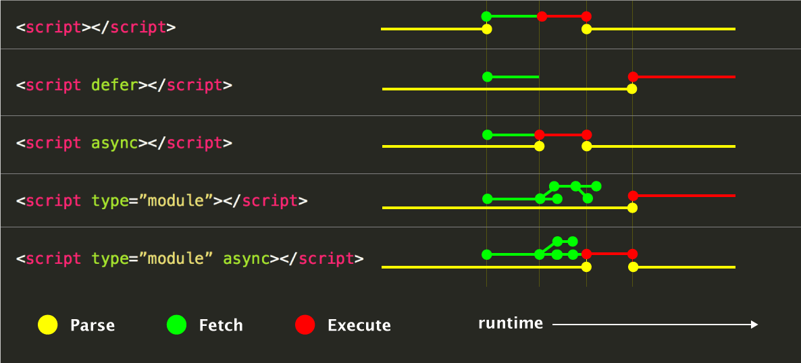
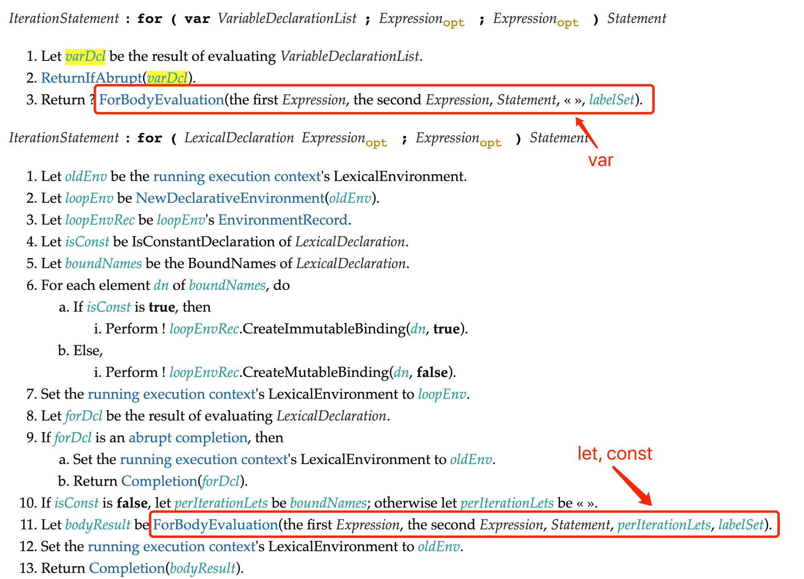
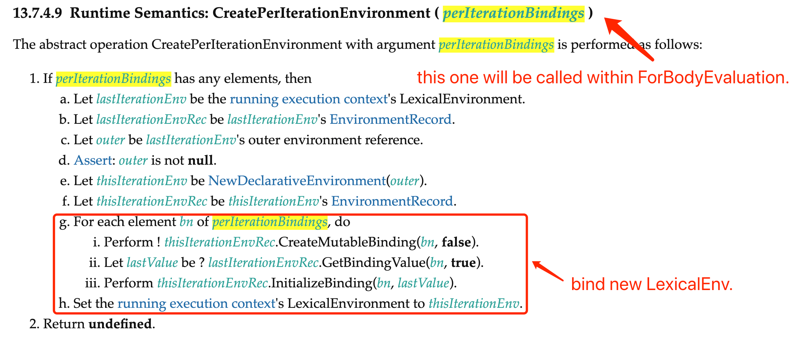

《JavaScript 高级程序设计（第四版）》读书笔记（第 1-7 章）
旧书清理系列。正好趁着第四版的推出，花点时间完整过一下。注：由于读的是电子版书籍，因此标注的页码会与实体书有所不同。
前言
- （Page：62）JavaScript 这门语言与宿主关系密切。宿主为 JavaScript 定义了与外界交互所需的全部 API，而这些 API 中的一部分则由 W3C 的相关规范定义（如
localStorage）。这就意味着，如果没有这些宿主提供的 API，JavaScript 本身的应用场景便会十分尴尬。并且不同于 Java，JavaScript 宿主环境的实现细节并非标准的一部分，因此也存在着很多专门用于“优化”某一浏览器引擎的 “hack-code”。
第 1 章 - 什么是 JavaScript
- （Page：71）1995年 JavaScript 问世时，其主要用途是用来代替 Perl 等服务器端语言来处理网页中输入内容的验证。
- （Page：72）Mocha -> LiveScript -> JavaScript。
- （Page：73）完整的浏览器宿主（宿主环境提供 ECMAScript 的基准实现和与环境自身交互必需的扩展，扩展使用 ECMAScript 的核心类型和语法，提供特定于环境的额外功能）端 JavaScript 实现包含多个组成部分：
- 核心标准（ECMAScript。其本身并不仅限于 Web 浏览器，ECMAScript 只是对实现这个规范所描述的所有方面的一门语言的称呼）；
- 文档对象模型（DOM）；
- 浏览器对象模型（BOM）。
- （Page：78）一个合格的 ECMAScript 实现必须满足下列条件：
- 支持 ECMA-262 中描述的所有“类型、值、对象、属性、函数，以及程序语法及语义”；
- 支持 Unicode 字符标准；
- 除此之外，也可以增加 ECMA-262 中未提及的额外类型，以及其中没有定义的“程序和正则表达式语法”。
- （Page：84）HTML 和 DOM（Document Object Model，文档对象模型）规范标准由 W3C 与 WHATWG 共同负责制定和维护。DOM 标准（DOM Core 与 DOM HTML）中包含有对应该如何访问和操作文档（基于 XML）任意部分的具体方式。几个版本：
- DOM Level 1：映射文档结构；
- DOM Level 2：增加了对鼠标和用户界面事件、范围、遍历的支持，而且通过对象接口支持了 CSS；
- DOM Level 3：增加了以统一的方式加载和保存文档的方法，以及验证文档的方法；
- DOM Living Standard（DOM4）：新增了替代 Mutation Events 的 Mutation Observers 等。
- （Page：88）HTML5 的出现以“正式规范的形式”涵盖了尽可能多的 BOM（Browser Object Model）特性。而在此之前，BOM 并没有相关的标准。
第 2 章 - HTML 中的 JavaScript
- （Page：93）<script> 元素的几个特殊属性：
- async & defer：

- async：表示应该立即开始下载脚本，但不能阻止其他页面动作，比如下载资源或等待其他脚本加载。只对外部脚本文件有效，并且不保证脚本可以按照它们的出现次序执行；
- defer：表示脚本可以延迟到文档完全被解析和显示之后再执行。只对外部脚本文件有效，推迟的脚本原则上应该按照它们的出现次序执行。在脚本执行完毕前，
DOMContentLoaded事件不会被触发；
- 其他属性：
- crossorigin：配置相关请求的 CORS 设置。crossorigin=”anonymous” 配置文件请求不必设置凭据标志；crossorigin=”use-credentials” 设置凭据标志，意味着出站请求会包含凭据（Cookies）；
- integrity：允许比对接收到的资源和指定的加密签名，以验证子资源完整性（SRI，Subresource Integrity）。该属性可用于确保 CDN 不会提供恶意内容。
- （Page：95）包含在 <script> 内的代码会被从上到下解释。在其内部的代码被计算完成之前，页面的其余内容不会被加载，也不会被显示。同样的，在解释外部 JavaScript 文件时，页面也会阻塞。
- （Page：96）在 XHTML 中可以使用 <script src=”foo.js”\> 的方式来引用外部 JavaScript 脚本。而在 HTML 中，该方式是无效的，有些浏览器无法正常处理。
- （Page：99）为了解决初始 JavaScript 代码执行带来的页面其他资源的下载延迟，现代 Web 应用通常将所有 JavaScript 引用放在 <body> 元素中的页面内容的后面（对于旧浏览器的最佳实践）。
- （Page：102）动态加载脚本：
// 会默认使用 “async” 的方式（加载不阻塞，执行阻塞）；
let script = document.createElement('script');
script.src = 'foo.js';
document.head.appendChild(script);- 声明式的资源获取请求，可以指明哪些资源是在页面加载完成后即刻需要的：<link rel=”preload” href=”foo.js”>。这一机制使得资源可以更早的得到加载并可用，且更不易阻塞页面的初步渲染，进而提升性能（当动态脚本加载被设置为“同步”时，可以通过此方式来优化性能）。
- （Page：106）XHTML 模式下 <script> 内联代码的“防御式”写法：
// 防止 “<” 被解析为标签；
<script type="text/javascript">
// <![CDATA[
function max(x, y) {
if (x <= y) {
return y;
} else {
return x;
}
}
// ]]>- 在 XML（XHTML）中，CDATA 块表示文档中可以包含任意文本的区块，其内容不会被作为标签来解析；
- XHTML 模式会在页面的 MIME 类型被指定为 “application/xhtml+xml” 时触发；
- 在非 XHTML 模式中，不需要（不建议）指定 type=”text/javascript””。
- （Page：114）<noscript> 标签可用于在浏览器不支持（或被关闭）JavaScript 时显示位于其内部被特殊准备的内容。
第 3 章 - 语言基础
- （Page：119）函数范围内的“严格模式”：
function foo() {
"use strict";
// ...
}- “严格模式”下的约束：
- 不能给未声明的变量赋值，会抛出 “ReferenceError”；
- 不能定义名为 eval 和 arguments 的变量；
- 不能 delete 一个未定义的变量；
- 只能使用前缀 “0o” 来表示八进制值，不能使用“前缀 0”。
- （Page：126）
var与let：
var声明提升（hoist）：在函数内部，使用该关键字声明的变量会被自动提升到函数作用域顶部（声明部分，非定义部分），而let则不会；var声明的范围是函数作用域，而let声明的范围是块作用域（较小，是函数作用域的子集），并且在同一个块作用域内不能重复声明；var在全局作用域内声明的变量会被“挂载”到 window 对象上，而let则不会。
function foo() {
console.log(age);
var age = 27;
// let age = 27; // Uncaught ReferenceError: Cannot access 'age' before initialization.
}
foo(); // undefined.- let 与闭包：
for (let i = 1; i < 6; i++) {
setTimeout(() => console.log(i));
}

- 每次 LexicalDeclaration 类型（let、const）的迭代都会产生新的“迭代环境记录（PerIterationEnvironment）”，因此每个循环内的闭包实际引用的值便是当前环境记录内定义的变量值。
- （Page：135）
const：
for (const key in {x: 1, y: 2}) {
console.log(key);
}
for (const value of [1, 2, 3, 4]) {
console.log(value);
}const声明的作用域也是块；const在声明时必须同时进行初始化。
- （Page：137）ECMAScript 的七种数据类型：
- Undefined：原始值。未初始化变量的默认值。由 Null 值派生而来；
- Null：原始值。表示空对象指针；
- Boolean：原始值；
- Number：原始值。八进制值通过 “0o” 前缀来表示，原先的 “0” 前缀在 ES6 后已经被抛弃（*Newer languages have been abandoning the prefix 0, as decimal numbers are often represented with leading zeroes. The prefix q was introduced to avoid the prefix o being mistaken for a zero, while the prefix 0o was introduced to avoid starting a numerical literal with an alphabetic character (like o or q), since these might cause the literal to be confused with a variable name. The prefix 0o also follows the model set by the prefix 0x used for hexadecimal literals in the C language;）。十六进制用前缀 “*0x**” 来表示；
- String：原始值。字符串是不可变的（immutable）。String() 构造方法会在内部首先调用其参数的 toString() 方法，来尝试将其值转换为对应的字符串表示。对于 null 与 undefined 则直接返回对应的字面量字符串；
- Symbol：原始值。且符号实例是唯一、不可变的。其用途是确保对象属性使用唯一标识符，不会发生属性冲突的危险；
- Object：引用值。是派生其他对象的基类（不一定适合 JavaScript 中的所有对象，比如宿主对象 BOM 和 DOM。仅适合 ECMAScript 中的对象行为）。每个 Object 实例都有如下属性和方法：
- constructor：用于创建当前对象的函数；
- hasOwnProperty：判断当前对象实例（非原型链）上是否有给定属性；
- isPrototypeOf：判断当前对象是否是另一个对象的原型；
- propertyIsEnumerable：判断给定属性是否是“可枚举”的（for-in）；
- toLocalString：返回对象的本地化字符串表示；
- toString：返回对象的字符串表示；
- valueOf：返回对象的字符串、数值或布尔表示。
- 一些特殊的 Case：
- typeof NaN === ‘number’：源自于 IEEE-754 中 NaN 本身是一种合法的浮点数表示形式，并且 ECMAScript 标准中规定可以将 NaN 算作一种数字类型（4.3.20 Number type）；
- typeof null === ‘object’：由于 null 被定义为“空对象指针”，因此也算是对“复杂类型”的一个空引用。
- （Page：166）模板字面量标签函数（Tagged Templates）：可以自定义模板插值行为。
function decoCurrency(templateArr, ...templateVal) {
return templateArr.reduce((prev, item, index) => {
prev += (index === 0 ? item : (`￥${templateVal[index - 1]}${item}`))
return prev
}, '');
}
let cost = 100;
decoCurrency`This apple costs me ${cost}.`; // "This apple costs me ￥100.String.raw标签函数可用于获取原始的、非转义的模板字面量内容。标签函数第一个参数中的 “raw” 属性也可以获得类似的内容。
- （Page：171）符号 Symbol：
let genericSym = Symbol();
let fooSym = Symbol('foo');
/* 在“全局符号注册表”中定义和重用符号 */
let fooGlobalSym = Symbol.for('foo'); // 新建；
let otherFooGlobalSym = Symbol.for('foo'); // 提取；
console.log(fooGlobalSym === otherFooGlobalSym); // true.
/* 查询全局符号的键名 */
console.log(Symbol.keyFor(fooGlobalSym)); // 'foo'.
/* 使用符号作为属性 */
let o = {
[genericSym]: 'Symbol genericSym',
};
Object.defineProperty(o, fooSym, {
value: 'fooSym',
});
Object.getOwnPropertySymbols(o); // (2) [Symbol(), Symbol(foo)].
Object.getOwnPropertyDescriptors(o); // {Symbol(): {…}, Symbol(foo): {…}}.
Reflect.ownKeys(o); // 返回所有成员的键（包括不可枚举类型）；- Symbol 是不可枚举类型；
- 不支持 new Symbol() 形式的构造函数方式，这样做是为了避免创建符号包装对象。但可以 Object(Symbol())（类型为 “object”）；
- 所有内置符号属性都是不可写、不可枚举、不可配置的：
- Symbol.iterator：指定了一个对象的默认迭代器可用于 for-of 循环；
- Symbol.asyncIterator：指定了一个对象的默认异步迭代器，可用于 for-await-of 循环；
- Symbol.hasInstance：用于判断某对象是否为某构造器的实例，可用于 instanceof 操作符；
- Symbol.isConcatSpreadable：用于配置某对象作为
Array.prototype.concat()方法的参数时是否展开其数组元素； - Symbol.match：指定了匹配的是正则表达式而不是字符串，
String.prototype.match()会调用此函数； - Symbol.replace：指定了当一个字符串替换所匹配字符串时所调用的方法，
String.prototype.replace()会调用此函数； - Symbol.search：指定了当一个字符串搜索所匹配字符串时所调用的方法，
String.prototype.search()会调用此函数； - Symbol.species：被构造函数用以创建派生对象；
- Symbol.split：指向一个正则表达式的索引处分割字符串的方法，
String.prototype.split()会调用此函数； - Symbol.toPrimitive：当一个对象转换为对应的原始值时，会调用此函数；
- Symbol.toStringTag：属性值应为字符串类型，这个字符串用来表示该对象的自定义类型标签，
Object.prototype.toString()会调用此函数； - Symbol.unscopables：用于设置一个对象需要从其 with 作用域内排除的属性名。
- （Page：203）运算符与操作符：
+运算符直接放置在变量前时会执行同 Number() 转型函数一样的效果。布尔值便为 0 或 1，字符串按照规则解析，对象调用它们的 valueOf 或者 toString 方法进行转换。-运算符同理，只不过会先将其便为数字，再取反。同样的，!!的效果也与 Boolean() 转型函数一样。- ECMAScript 中的位运算会先将以 IEEE-754 形式表示的 64 位值转换为 32 位整数，然后再以补码形式进行位运算。最后再将计算结构转换为 64 位的浮点数进行实际的存储。因此对超过 32 位有符号数（默认情况下，ECMAScript 中所有的整数都表示为有符号数）大小的值进行的位运算，其所得结果可能是“截断后”的结果。
- 左移会保留符号位。ECMAScript 同 Java 一样，也使用
>>与>>>来区分逻辑右移与算数右移。 - 不同于 C/C++ 等强类型语言，ECMAScript 中的 “&&” 与 “||” 不一定会返回布尔类型的结果。相反，它们只在判断真值表时会将操作数转换为布尔值，而实际返回的值，是能够最终决定该表达式布尔性质的那个值。
- 对于
+加法操作符，前者在操作数中存在字符串时，会对另一个操作数调用 ToString() 内部抽象方法（标准中定义）来将其转换为字符串，然后进行拼接。对于-减法操作符，则会调用对象操作数的 valueOf 或对其他类型操作数调用 Number() 方法来将其转换为数字。 - 比较操作符会优先使用“数值比较”，即当有任意一个操作数为数字时，另一个操作数会被尝试转换为数字。否则只有当两个均是字符串时，才进行字符串比较。任何与 NaN 有关的比较都返回 false。
==等于操作符优先使用“数值比较”，即在隐式类型转换时（两个操作数类型不同），优先尝试将操作数转换为数值。===全等操作符不对操作数进行隐式类型转换。- “逗号运算符”会返回一系列表达式中最后的一个值。
- （Page：245）标签语句：用于给语句加标签，典型应用场景是“嵌套循环”。
start: for (let i = 0; i < 10; ++i) {
inner: for (let j = 0; j < 10; ++j) {
if (i === 2) break start
console.log(i)
}
}- （Page：253）“switch…case” 语句在比较每个条件的值时会使用全等操作。不同于 C/C++，case 子句使用的变量或值不再有“只能是整型常量”的限制，在 ECMAScript 中可以使用任意的表达式。
第 4 章 - 变量、作用域与内存
- （Page：262）引用值（Object）的实体被存放在“堆内存”中。
- （Page：266）ECMAScript 中函数的参数是“按值传递”的（对于引用类型，可以理解为直接传递的是指针值）。
- （Page：268）每个上下文都有一个关联的“变量对象”，包含了当前上下文中定义的所有变量和函数。上下文中的代码在执行时，会创建变量对象的一个作用域链，代码正在执行的当前上下文的变量对象位于链的最前端。位于链前端的上下文可以访问后面上下文内的变量，反之则不行。以下两种情况会在作用域链前端临时添加一个上下文：
- try…catch 语句的 catch 块：会创建一个新的变量对象，包含要抛出的错误对象的声明；
- with 语句：会添加一个所指定的对象。
- （Page：278）暂时性死区（TDZ）：The variables are created when their containing Lexical Environment is instantiated but may not be accessed in any way until the variable’s LexicalBinding is evaluated.
let x = 'outer x';
(function() {
// enter TDZ (x is hoisted, but inaccessible).
console.log(x); // Uncaught ReferenceError: Cannot access 'x' before initialization.
let x = 'inner x';
}());- （Page：280）冻结和封存对象：
Object.freeze(obj)：一个被冻结的对象其所有属性都不能被修改；Object.seal(obj)：封闭一个对象，阻止添加新属性并将所有现有属性标记为不可配置。但当前属性的值只要原来是可写的就可以改变。
- （Page：297）对象的频繁创建和销毁会导致浏览器引擎 GC 的频繁调用。
第 5 章 - 基本引用类型
- （Page：312）通过
new Date().getTime()获得的时间戳是基于 UTC 的，因此是时区独立的。 - （Page：327）为了能够让原始值拥有对象的行为（具有方法），需要借助“原始值包装类型（Boolean \ Number \ String）”。JS 引擎会在“以原始值形式访问其上的某个属性或方法”时，自动隐式创建该原始值的一个临时包装类对象。因此对该临时对象的任何“修改”操作，都不会生效。
let obj = new Object("Hello, world!");
console.log(obj instanceof String); // true.- （Page：336）JavaScript 字符串使用了两种 Unicode 编码混合的策略：UCS-2 与 UTF-16。对于 U+0000~U+FFFF 范围内的 65536 个字符，统称为 Unicode 的基本多语言平面（BMP）。
- （Page：362）
encodeURI用于编码整个 URL（比如“空格”），而encodeURIComponent仅用于编码 URL 中的单独组件（比如“#”、“?” 等）。 - （Page：376）可以通过全局属性
globalThis来获得全局的 this 值。
第 6 章 - 集合引用类型
- （Page：380）在定义对象时，键只能为字符串（其他类型会被自动转换）或 Symbol 类型。
- （Page：384）数组：
Array.from(arrayLike, mapFu, thisArg)用于将任何“可迭代”结构、或包含一个 length 属性的“可索引元素”转换为一个数组（字符串、Set、Map 等。亦可用于数组的“浅拷贝”）；Array.of(arg)用于将一组参数转换为数组。- 通过修改数组对象的
length属性，可以动态调整数组的大小； - 可以将 Array 当成一个键为“顺序数字”的一个 Object；
- *在 ECMAScript 中，可以在迭代数组时，动态更改数组的长度。
- 不同于
Object.keys等 Object 的静态方法，Array 上的Array.prototype.keys会返回对应结果的迭代器，而非数组； Array.prototype.toLocaleString用于根据指定的 locale 信息，将数组中的元素加以处理（比如当成金额，会添加货币符号并对数额进行分割）后进行输出；- 默认情况下，
Array.prototype.sort会将元素转换成字符串后，再进行比较。当传递了比较函数时，返回负值意味着“第一个值应该放在第二个值的前面”； Array.prototype.every对数组每一项都运行传入的函数，若每一项函数都返回 true，则这个方法返回 true。Array.prototype.some对数组每一项都运行传入的函数，若有一项函数返回 true，则这个方法返回 true；Uint8ClampedArray（不允许任何方向的元素值溢出）完全是 HTML5 Canvas 元素的历史留存。除非做跟 Canvas 相关的开发，否则不要使用。
- （Page：440）Map与Set：
- 可以通过“可迭代对象”来初始化；
let map = new Map({
[Symbol.iterator]: function*() {
yield ['key', 1]; // WeakMap 只能以“对象”作为键；
}
});- 相较于 Object，Map 可以以任意类型的元素作为键。并且，Map 实例会维护键值对的插入顺序，因此可以根据插入顺序执行迭代操作（同 Array 类似，其原型链上的 entries、keys 和 values 方法会返回相应的迭代器）；
- 对于给定固定大小的内存，Map 大约可以比 Object 多存储 50% 的键值对；
- WeakMap 中的 “Weak” 描述的是 GC 对待“弱映射”中键的方式，即：键对象的引用方式为“弱引用”，可能随时会被 GC 清除。键只能是 Object 或继承自 Object 的类型，且无法被迭代。若使用其他类型，则会抛出 TypeError。
- WeakMap 可以被用来实现“私有变量”：
// 利用 WeakMap 键的不可迭代性，且 WeakMap 中键值对的生命周期与对象绑定；
const User = (() => {
const wm = new WeakMap();
class User {
constructor(id) {
this.idKey = Symbol('id');
this.setPrivateId('id', id);
}
setPrivateId(key, value) {
const privateMembers = wm.get(this) || {};
privateMembers[key] = value;
wm.set(this, privateMembers);
}
};
return User;
})();- WeakMap 可以被用来保存 DOM 节点元数据：
// 当 DOM 节点被移除后，WeakMap 中的保存 DOM 对象的键值对会被自动清除（不会阻碍 GC）；
const wm = new WeakMap();
const loginButton = document.querySelector('body');
wm.set(loginButton, { disabled: true });- Set 会维护值插入时的顺序，因此支持按顺序迭代；
- WeakSet 与 WeakMap 类似，对所保有的元素持有“弱引用”。其内部的值只能是 Object 或继承自 Object 的类型，并且也无法被迭代；
- （Page：475）以下四种原生集合类型拥有默认迭代器（支持顺序迭代，可以应用 for-of；都兼容“扩展操作符”，可以用于浅复制）：
- Array；
- TypedArray；
- Map（WeakMap 不可被迭代）；
- Set（WeakSet 不可被迭代）；
第 7 章 - 迭代器与生成器
- （Page：482）迭代器：
- 开发者无需事先知道如何进行迭代，就能够实现迭代操作；
- “迭代器模式”描述了一个方案，即可以把有些结构变成为“可迭代对象”，因为它们实现了 Iterable 接口，而且可以通过 Iterable 接口进行消费（对“可迭代”的抽象）。*通过迭代器属性 Symbol.iterator 可以获取/添加一个“迭代器工厂函数”，每次调用这个工厂函数都会返回一个新迭代器。迭代器对象每次调用
next方法来遍历数据，每次调用该函数会返回一个对象，其中包含迭代器返回的下一个值 **value，和用于表示是否还有值可迭代的 done 属性； - 内置语言结构在发现还有更多值可以迭代，但不会消费这些值时，会自动调用迭代器上的
return方法。对于不能“关闭”的迭代器（比如“数组”），还可以从上次离开的地方继续迭代。对于自定义类型来说，带有该方法意味着可以关闭。
class Counter {
constructor(limit) {
this.limit = limit;
}
[Symbol.iterator]() {
// use closure to produce new "count" for each iteration.
let count = 1, limit = this.limit;
return {
next() {
if (count <= limit) {
return { done: false, value: count++ };
} else {
return { done: true, value: undefined };
}
},
return() { // will be fired if iteration exits early.
console.log('Exiting early!');
return { done: true };
}
};
}
};
let counter = new Counter(3);
for (let i of counter) console.log(i);- 迭代器维护着一个指向可迭代对象的引用，因此迭代器会阻止 GC 回收对象；
- 对于 ECMAScript 类型（Array \ Set 等），其迭代器对象的迭代器对象还是自己（套娃），因此迭代器对象本身也可以被迭代。对于 “Symbol.iterator”，可以将其理解为一个为自定义类型实现“可迭代”的必要接口。
- （Page：499）生成器：
- 箭头函数不能用来定义生成器；
- 调用生成器函数会产生一个“生成器对象”，并处于“暂停执行（suspended）”状态。该对象也实现了 Iterable 接口，因此具有 next 方法；
yield关键字可以让生成器停止和开始执行。通过 yield 退出的生成器函数会处在 “done: false” 的状态；而通过 return 退出的生成器函数会处在 “done: true” 的状态；- 生成器的几种用途：
- 用来自定义可迭代对象：
function* nTimes(n) {
while(n--) {
yield;
}
}
// this will iterates for 3 times.
for (let _ of nTimes(3))
console.log('foo');- 借助 yield 实现“输入输出”：（*第一次调用 next 传入的值不会被使用，仅用于开始执行生成器函数）
// 第一次执行时，会先求 yield 子表达式，返回值，停止；
// 第二次执行时，yield 子表达式收到通过 next 传入的参数，返回值，停止；
function* generatorFn() {
return yield 'foo';
}
let generatorObj = generatorFn();
console.log(generatorObj.next()); // {value: "foo", done: false}.
console.log(generatorObj.next('bar')); // {value: "bar", done: true}.- 产生可迭代对象：（使用“*”增强 yield 的行为，让其能够迭代一个可迭代对象，从而一次产出一个值）
// yield* 将一个可迭代对象序列化为一连串可单独产出的值；
function* generatorFnA() {
yield* [1, 2, 3];
// for (const x of [1, 2, 3]) { // 等价；
// yield x;
// }
}
for (const x of generatorFnA())
console.log(x);
// yield* 的值为关联迭代器返回 “done: true” 时的 value 属性的值；
function* generatorFnB() {
console.log('iter value:', yield* [1, 2, 3]);
}
// 可以用自定义生成器来设置 yield* 的返回值；
function* generatorFnC() {
console.log(yield* (function*() {
console.log(yield 'iter value'); // yield 可以接收从 next 传入的值；
return 'yield* value';
})());
}- 使用 yield 实现递归算法：
function* nTimes(n) {
if (n > 0) {
yield* nTimes(n - 1);
yield (n - 1);
}
}
for (const x of nTimes(3))
console.log(x);- 其他：所有的生成器对象都有 return 方法，借助于它和 throw 方法可用于强制生成器进入关闭状态（两者均需要主动调用）。其中，若生成器还没有开始执行，那么调用 throw 抛出的错误不会在生成器函数内部被捕获，这相当于在函数外部抛出了错误。
const g = generatorFnA();
for (const x of g) {
if (x > 1) {
g.return(4); // stop and return (done: true).
// g.throw('error msg');
}
console.log(x);
}